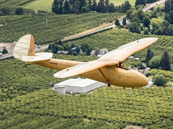
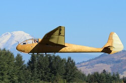
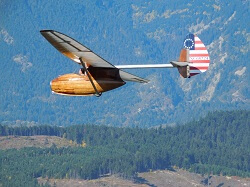
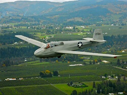
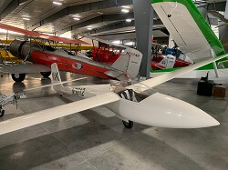
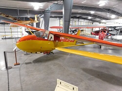

Gliders
1902 Wright Glider
1920's-30's Alfaro Primary Glider PTG-2
1930's Schleicher Rhonbussard Model 35 Glider
1930 WACO Primary Glider
1935 Franklin PS-2 Glider
1939 Slingsby T.6 Kirby Kite
1939 Slingsby T.13 Petrel
1942 Bowlus BA-100 Baby Albatross
1942 Frankfort TG-1A "Cinema B"
1942 Laister Kauffman TG-4A Training Glider
1942 Piper TG-8 Training Glider
1942 Schweizer TG3A Training Glider
1942 Taylorcraft TG-6 Training Glider
1951 Heini Dittmar Condor IV
1963 Oberlerchner MG-23 SL Glider
1964 Schleicher Ka7 Glider
1967 Schweizer SGS 2-33
1968 Glasflügel H-301B Libelle Glider
1969 Schweizer SGS 2-33A
1978 PDPS PZL Bielsko Biala SZD-42-2 "Jantar" 2B Glider
gliders
Wright Glider Replica

Year: 1902*
Acquired with Donated Funds
Wilbur and Orville Wright were determined and meticulous experimenters and after their wind tunnel experiments of 1901 showed that the Lilienthal data on wing design was wrong they applied what they had learned to the following season’s glider experiments. On this, their third glider design, they changed the shape of the wing cross section and built the first aircraft to use three-axis (pitch, yaw and roll) control. They flew in a prone position, controlled wing warp by sliding side to side in a hip cradle and controlled the elevator by rolling a horizontal bar with their hands. The rudders were coupled to the wing warping mechanism for coordinated flight, the first time that the rudders were not fixed in one position. They made nearly 1,000 flights in September and October 1902 and as many again in September and October 1903. The Wrights abandoned their glider at Kitty Hawk in 1903 and the only remaining part of it is a single wingtip in the Smithsonian Institution collection.
*Parts for this replica were built by Jud L. Ketola over a number of years and it was completed for display by WAAAM volunteers in 2018.
1920's-30's Alfaro Primary Glider PTG-2

Donation: Brian Coughlin
Heraclio Alfaro-Fournier built and flew the first airplane in Spain in 1914 for which he was knighted by King Alfonso XIII. Alfaro designed and flew airplanes throughout his life, many of them while he lived in the U.S. His best known airplane is a modification, for the 1927 Dole Trophy Race, of the Air King biplane “City of Peoria”. Alfaro was an instructor at the Massachusetts Institute of Technology (MIT) for a time and around 1938 developed an axial engine that was produced by the Hendee Manufacturing Company, maker of Indian motorcycles. Little information is available on the Alfaro PTG-2 Primary Glider except that at least five are known to have been registered in the U.S. around 1930. It is likely that the WAAAM PTG-2 is the only one remaining.
1930's Schleicher Rhonbussard Model 35 Glider

Acquired with funds from Jerry Wenger.
The Rhönbussard, designed in 1933 by Hans Jacobs for glider manufacturer Alexander Schleicher GmbH, is the little brother of his Rhönädler design of the previous year. For simplicity and reduced cost, the Rhönbussard has no spoilers, air brakes or flaps. The ailerons are pushrod operated. The glider uses a wheeled dolly for takeoff which the pilot jettisons when it leaves the ground. The landing gear is a main skid and a tail skid, typical for the time. It was considered an intermediate performance glider and flights of 200-300 km were flown in it.
This project on display will be restored when given enough time and funding.
1930 WACO Primary Glider
Donation: Terry Brandt
Charles Lindbergh’s Trans-Atlantic flight of 1927 fanned interest in aviation across the U.S.A. The cheapest way to participate was with a primary glider which saw great popularity in the late 1920’s in Europe. After WWI Germany was not permitted to build and fly powered aircraft so they took a particular interest in gliders. Primary gliders are minimal aircraft, little more than a seat on a wood or steel tube truss with a wing and tail feathers attached. They were most often launched from a hilltop by several men pulling on shock cords (bungees). WACO and Cessna were among the U.S. builders of these birds. Primary gliders were successful as trainers in Europe but were less successful in the U.S. where Europe’s discipline in primary glider training was absent. The U.S. accident rate far exceeded that of Europe and the Air Bureau stepped in to stanch the bloodshed. The WAAAM WACO Primary Glider, a WACO-built original, was restored by museum volunteers in 2014.
Additional Specifications:
Glide Ration: 15:1
Empty Weight: 225 lbs
Gross Weight: 450 lbs
Wing Span: 36'
Length: 21'
Height: 10'
Approximate Number Built: 300-ish
1935 Franklin PS-2 Glider

Acquired with funds from Don Mayo.
The Franklin PS-2 glider first flew in 1931. It was designed by R.E. Franklin, a Professor of Mechanical Engineering at University of Michigan who built it as an improvement over the German designs then in use. The wing is braced with struts rather than with multiple wires as was then common practice. Assembly and disassembly is much easier with struts than with wires. In 1933 Stan Smith won the National Soaring Championship in a Franklin PS-2. In 1934 three PS-2s were used in a trial of the Lustig Skytrain, a multi-glider towing arrangement intended for delivery of goods and mail. Departing New York, the three gliders were towed in a line then released in sequence over their respective destinations of Philadelphia, Baltimore and Washington, D.C. Also in 1934, the U.S. Navy procured six PS-2s for training though these saw little use. WAAAM's PS-2 is sporting the Navy PS-2 colors. In 1938 one of the Navy PS-2s was transferred to NACA (forerunner of NASA) where it was used for ground effect research by towing a PS-2 behind a specially designed automobile. The WAAAM PS-2 was owned and flown by the University of Michigan Glider Club until 1943.
Additional Specifications:
Glide Ration: 15:1
Empty Weight: 220 lbs
Gross Weight: 400 lbs
Wing Span: 36'
Length: 17'6"
Height: 6'10"
Approximate Number Built: 54
1939 Slingsby T.6 Kirby Kite
Photo credit: Lyle Jansma
Acquired with funds from Jerry Wenger
Fred Slingsby was an RAF pilot who repaired gliders and designed his own which were based on German designs. He founded Slingsby Sailplanes, Ltd., moved it to the village of Kirbymoorside, England and in 1935 made improvements to the very successful German Grunau Baby II, which he was building under license. He extended the wing span slightly, used Grunau Baby parts wherever he could and streamlined the fuselage, dubbing his glider the T.6 Kirby Kite. It was a high performance aircraft for its time, making a 55-mile flight in its first competition. In WWII sixteen Kirby Kites were impressed into service for RAF pilot training. Of the many Kirby Kites built only about eight remain. The one in WAAAM’s collection was restored by Bob Gaines with the original varnish finish it had from the factory in 1939. In 2002 this airplane won the Vintage Sailplane Association Restoration Award.
1939 Slingsby T.13 Petrel
Acquired with funds from Jerry Wenger.
Based in part on the successful German Rhönadler, the Slingsby Petrel quickly became a darling of the skies. After just three units production halted due to World War II. During the war this Petrel was impressed for training both anti-aircraft gun crews and the Royal Observer Corps’ aerial spotters. Post-war, as British Glider Association (BGA) 418, WAAAM’s Petrel continued to draw the eyes of many including the glider enthusiast Bob Gaines of the USA who purchased this glider in 2001 and was flying it stateside by 2002. Gaines began a complete restoration in 2005 but he passed away before it was finished. Through the generosity of WAAAM’s donors, the museum was able to acquire four gliders from the Gaines collection. The Petrel restoration was completed to original factory style and once again took to the air in June 2017.
1942 Bowlus BA-100 Baby Albatross
Donation: Leonard Sharpe
In the late 1930’s William Hawley Bowlus advertised in popular magazines his single-seat BA-100 Baby Albatross design. It was sold as a series of partial kits offering affordable flying at a time when money was hard to come by. The kit cost totaled $425 but, for those who could afford it, the Baby Albatross was available factory-built and ready to fly for about $750. The fuselage pod is a wooden monocoque design and the balance of the structure is wood with fabric covering. The wing design was based on that of the German Grunau Baby 2. Parts for 90 aircraft were made but according to the National Air and Space Museum probably only 50-60 were completed and flown. Distance flights of 263 and 280 miles were flown in the Baby Albatross as well as a flight to 10,000 feet of altitude. Bowlus’ company was backed by many aviation luminaries such as Reuben H. Fleet, Al Menasco, Donald Douglas and Glenn Martin.
1942 Frankfort TG-1A "Cinema B"
Donation: Jerry Wenger
This is a project on display and will be restored given enough time and funding.
The Frankfort Sailplane Company of Joliet, Illinois manufactured the civilian single-seat Cinema glider in the late 1930’s. In 1940 they designed a two-seat version, the Cinema B. The Cinema B had a steel tube fuselage with wood/fabric wings that were single strut braced. When the Army procured Cinema B’s for pilot training they had Frankfort change the fully moveable tail surfaces to conventional rudder & elevator tails. The TG-1A was the first training glider procured by the Army.
1942 Laister-Kauffman TG-4A Training Glider

Donation: Frederick Moore
As a builder of successful pre-World War II sport gliders, Laister-Kauffman was in a strong position to meet the Army’s requirements for a training glider. The initial order for 75 TG-4As was so well received a second order for 75 was placed. The TG-4A, at $4,062 apiece, was on the high end of the procurement cost range for gliders but the price included a transport trailer. Unfortunately, what was good for the civilian market – most notably, light handling and a good glide ratio – did not correspond well to the type of experience glider pilots needed for flying cumbersome combat gliders. WAAAM’s TG-4A was donated to the museum in late 2017 and was restored and flown in Spring 2018.
Additional Specifications:
Glide Ratio: 22:1
Empty Weight: 476 lbs
Gross Weight: 875 lbs
Wing Span: 50'
Length: 21'4"
Height: 3'8"
Approximate Number Built: 153
1942 Piper TG-8 Training Glider

Acquired with funds from museum donations.
Piper was the last of the three civilian “cub type” companies contracted to build their version of a training glider. Piper’s design was a favorite because so much of the glider was kept similar to their L-birds. By utilizing cost-cutting elements such as using rudder pedal springs for the spoiler return springs and other techniques, the cost of the TG-8 came in well under the other TGs at $2108 per glider. WAAAM’s TG-8 left service in late 1944 and was acquired by WAAAM as a project in 2012 through the generosity of the museum’s donors. The restoration began under Director of Aircraft Restorations Tom Murphy and finished by his successor Jakonah “Jay” Matson Bell and our crew of volunteers. WAAAM took it to EAA's Airventure in Oshkosh, WI in 2018 where it flew in the Warbird Review during the Friday and Saturday airshows.
1942 Schweizer TG3A Training Glider
Year: 1943
Acquired with museum funds and funds by Don Mayo.
The TG-3A is a two-seat glider designed and built during WWII to train pilots to fly the WACO CG-4A Hadrian transport glider. This wood wing design superseded the aluminum-winged TG-2 because aluminum’s wartime status as a strategic material severely limited its availability. Construction is tube and fabric fuselage with a fabric covered wood wing. All but one of the production run of 114 were built for the U.S. Army Air Force. Nearly two years after the war ended the FAA issued a type certificate for it as the Schweizer SGS 2-12 although none were built as that model. This is the last known flying aircraft of its kind.
Additional Specifications:
Glide Ration: 20:1
Empty Weight: 820 lbs
Gross Weight: 1200 lbs
Wing Span: 54'
Length: 27'7"
Height: 8'
Approximate Number Built: 114
1942 Taylorcraft TG-6 Training Glider

Donation: Terry Brandt
Derived by modifying the airframe of the L-2 Grasshopper, gliders of this type were used to train the pilots of the WACO gliders used in the D-Day invasion of Europe. The instructor would sit in the rearmost seat, the beginning student in the center and the intermediate student in the front. When the intermediate student went on to advanced training the beginner would move to the front seat. After the war these were sold as surplus and nearly all of those were converted to power planes.
1951 Heini Dittmar Condor IV

Acquired with funds from Jerry Wenger.
Heini Dittmar, an accomplished test pilot and aircraft designer, was the first man to exceed 1,000 km/h which he did as one of WWII’s test pilots of Germany’s rocket powered Messerschmitt ME-163 Komet. The Condor IV was the fourth in the successful Condor series of gliders designed by Dittmar and was his first two-seater. Our Condor IV glider, one of four built by Dittmar himself, was completed in 1951. The following year this aircraft set a world speed record for the 100 km triangle course. The production Condor IV gliders were built by Alexander Schleicher Aircraft Company of Poppenhausen, Germany.
Additional Specifications:
Glide Ratio: 30:1
Empty Weight: 970 lbs
Gross Weight: 1300 lbs
Wing Span: 59'1"
Length: 27'8"
Height: 5'3"
Approximate Number Built: 18+
1963 Oberlerchner MG-23 SL Glider
Donation: Dorothy Klemmedson
Designed by Erwin Musger the MG-23 SL is a single seat sport glider with a 53’ 10” wing span. Its maximum glide ratio is 33:1 and maximum speed is 140 MPH in smooth air. The prototype flew in 1955 but production was delayed, beginning in 1962 and ending in 1966.
Additional Specifications:
Glide Ratio: 33:1
Empty Weight: 529 lbs
Gross Weight: 794 lbs
Wing Span: 53'10"
Length: 23'4"
Height: 4'11"
Approximate Number Built: 94
1964 Schleicher Ka7 Glider

Donation: Jerry Wenger
Sporting a distinctive forward swept wing, the Schleicher Ka7 Rhönädler was designed as a two-seat trainer with excellent performance. This allowed pilot training to range from basic flying skills to preparation for high performance gliders, all in the same aircraft. In competition it twice improved German distance records and ten years after its introduction it set a new German goal flight record. (A goal flight is one with a destination or set of turn points that are selected before the flight.)
Additional Specifications:
Glide Ration: 25:1
Empty Weight: 628 lbs
Gross Weight: 1058 lbs
Wing Span: 52'6"
Length: 26'9"
Height: 5'7"
Approximate Number Built: 550
1967 Schweizer SGS 2-33
 Year: 1967
Year: 1967
Donation: Jerry Wenger
The 2-33 was built by the Schweizer Aircraft Corporation in Elmira, New York. Its construction is metal tube framework with fabric covering on the fuselage and tail and a metal-covered wing. First flown in 1965, this model style is an intermediate trainer that was a mainstay of glider flight for more than twenty years. The U.S. Air Force Academy flew 13 of them until 2002. Even today it remains a popular sport and training glider.
Additional Specifications:
Glide Ration: 22:1
Empty Weight: 600 lbs
Gross Weight: 1041 lbs
Wing Span: 51'
Length: 25'9"
Height: 9'3.5"
Approximate Number Built (includes 33A): 579
1968 Glasflügel H-301B Libelle Glider
Year: 1968
Donation: Christopher and Woodson Woods
The Glasflügel Libelle is an all glass-fiber single-seat Open class glider. In 1964 the H-301 was the first all glass-fiber glider certified in Germany and in the U.S.A. and the company was the first to produce glass-fiber gliders in quantity. The glider has a retractable wheel and flaps that change the wing’s camber (shape), features that moved it from the 15-meter class to the Open class for competition. Other features that made it a standout include a tongue-fork wing attachment (soon adopted by other manufacturers), spring-seated airbrakes and a compartment built into the leading edge for water ballast that is used to increase wing-loading for higher speeds on cross country flights. Two different canopies were available, one with a vent for normal flight and one for racing.
Additional Specifications:
Glide Ratio: 39:1
Empty Weight: 397 lbs
Gross Weight: 661 lbs
Wing Span: 49'3"
Length: 20'4"
Height: 2'8" (wheel up)
Approximate Number Built: 111
1969 Schweizer SGS 2-33A
Year: 1969
Donation: Jerry Wenger
The 2-33 was built by the Schweizer Aircraft Corporation in Elmira, New York. Its construction is metal tube framework with fabric covering on the fuselage and tail and a metal-covered wing. First flown in 1965, this model style is an intermediate trainer that was a mainstay of glider flight for more than twenty years. The U.S. Air Force Academy flew 13 of them until 2002. Even today it remains a popular sport and training glider. The 2-33A has a counterbalanced rudder and looks nearly identical to WAAAM's earlier 2-33.
Additional Specifications:
Glide Ration: 23:1
Empty Weight: 600 lbs
Gross Weight: 1040 lbs
Wing Span: 51'
Length: 25'9"
Height: 9'3.5"
Approximate Number Built (includes 33 version): 579
1978 PDPS PZL Bielsko Biala SZD-42-2 "Jantar" 2B Glider
Donation: Ben & Donna Davidson
This airplane has been donated to WAAAM and will be arriving soon.
The Jantar 2B is an Open Class, high performance glider designed and built in Poland in the mid-1970s. Its construction is glass fiber throughout with the wings built on a single spar with foam-filled glass fiber/epoxy skin. The Jantar wing position was raised from mid to shoulder in this model and the tail form is conventional, differing from the more common T-tail of its predecessors. The first two prototypes placed second and third in the 1976 World Championship in Finland. The original owner of this glider was Dick Brandt, father of Museum Founder Terry Brandt.
Additional Specifications:
Glide Ratio: 49:1
Empty Weight: 798 lbs
Gross Weight: 1431 lbs
Wing Span: 67'3"
Length: 23'7"
Height: 5'9"
Approximate Number Built: 60